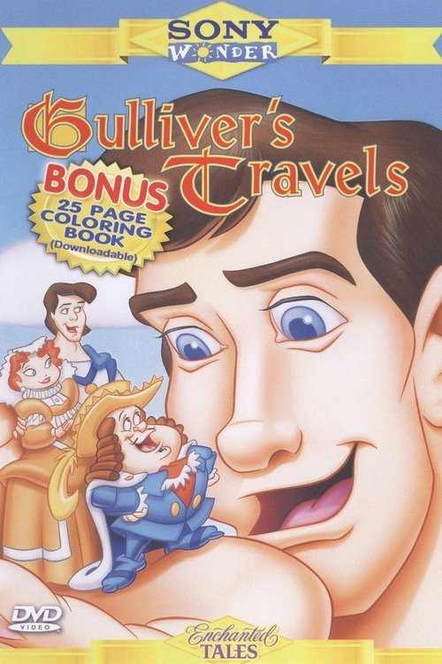

Los Viajes de Gulliver (1996)
Sinopsis Rápida
El pequeño Gulliver se embarca en una aventura épica, navegando mares desconocidos y descubriendo mundos fantásticos, pero ¿sobrevivirá a los gigantes y los diminutos liliputienses que habitan estos extraños lugares?
Sinopsis Detallada
Esta adaptación de la clásica novela de Jonathan Swift sigue las aventuras de Lemuel Gulliver, un humilde médico de barco que se ve envuelto en extraordinarias circunstancias al naufragar en tierras desconocidas. Desde las diminutas islas de Lilliput, con sus guerras absurdas, hasta los gigantes de Brobdingnag y otras islas fascinantes, Gulliver vivirá experiencias que cuestionarán su propia perspectiva del mundo. La película ofrece una mezcla cautivadora de humor, fantasía y aventuras que la convierten en una opción ideal para toda la familia. Las espectaculares escenas de los diferentes mundos ofrecen un disfrute visual impactante.
¿Por qué tenés que verla?
- Una adaptación familiar clásica de la famosa novela.
- Los efectos especiales, para su época, son sorprendentemente buenos y dan vida a los mundos fantásticos.
- Es una película que ha entretenido a varias generaciones, siendo un buen ejemplo de la perdurabilidad de la historia de Gulliver.
- Ideal para ver en familia.
Idea Extra
Comparación de las diferentes adaptaciones cinematográficas de 'Los Viajes de Gulliver' a través de la historia.
{{CONTENIDO_RELACIONADO}}